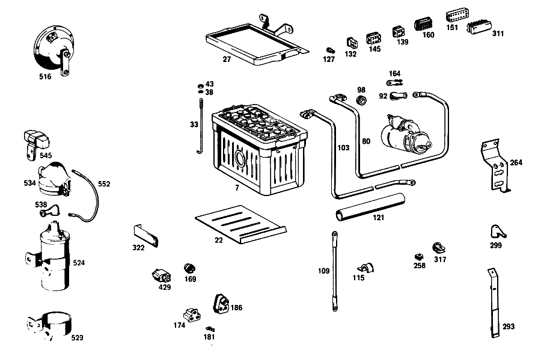

| № | Артикул | Название | Кол. | Примечание | Ограничение |
|---|---|---|---|---|---|
| 7 | A 003 541 33 01 | АКБ | 1 | 12 V/55 AH | |
| 22 | A 110 541 06 35 | Прокладка | 1 | ||
| 27 | A 108 540 01 23 | MOUNTING FRAME | 1 | ||
| 33 | A 186 541 01 24 | Стяжный болт | 1 | ||
| 38 | A 094 990 68 10 | Пружинное кольцо | 2 | ||
| 43 | N 000934 006013 | Гайка | - | ||
| 43 | N 304032 006008 | Шестигранная гайка | 2 | ||
| 80 | A 108 540 07 30 | Электрический провод | 1 | Рулевое управление: Влево | |
| 92 | A 111 546 00 35 | КОЛПАЧОК | - | ||
| 92 | A 116 546 01 35 | Защитный колпачок | 1 | ||
| 98 | A 000 997 28 81 | Проходная втулка | 1 | ||
| 103 | A 110 540 06 31 | Электрический провод | 1 | FROM BATTERY TO SIDE MEMBER | |
| 109 | A 116 540 02 31 | Электрический провод | 1 | FROM SIDE MEMBER TO ENGINE | |
| 115 | A 187 995 00 37 | хомут | 2 | Рулевое управление: Вправо [402] БОЛЬШЕ НЕ ПОСТАВЛЯЕТСЯ | |
| 121 | A 000 546 29 30 | ИЗОЛИРУЮЩИЙ ШЛАНГ | - | [402] БОЛЬШЕ НЕ ПОСТАВЛЯЕТСЯ | |
| 127 | A 000 545 47 28 | - Сцепление, механическое | - | Рулевое управление: Влево | |
| 127 | A 004 545 85 28 | - ШТЕКЕР | - | Рулевое управление: Влево | |
| 127 | A 008 545 20 28 | - Нижняя часть корпуса | 1 | ОДНОКОНТАКТ.; 1\-PIN Рулевое управление: Влево | |
| 132 | A 002 545 49 28 | - ШТЕКЕР | - | ||
| 132 | A 008 545 37 28 | - Сцепление, механическое | 6 | ДВУХПОЛЮСНЫЙ; 2\-PIN | |
| 139 | A 004 545 86 28 | - Штекер | - | ||
| 139 | A 007 545 00 28 | - КОРПУС ШТЕК. ГНЕЗДА | - | ||
| 139 | A 015 545 49 28 | - КОРПУС ШТЕК. ГНЕЗДА | NB | ЧЕТЫРЁХПОЛЮСНЫЙ; 4\-PIN | |
| 139 | A 014 545 85 28 | - КОРПУС ШТЕК. ГНЕЗДА | NB | ЧЕТЫРЁХПОЛЮСНЫЙ [402] БОЛЬШЕ НЕ ПОСТАВЛЯЕТСЯ | |
| 145 | A 006 545 80 28 | - CONTACT SUPPORT | 2 | ШЕСТИПОЛЮСНЫЙ; 6\-PIN | |
| 151 | A 000 545 36 28 | - ШТЕКЕР | 1 | 12\-КОНТАКТН. | |
| 156 | A 002 545 35 28 | - ШТЕКЕР | - | ||
| 156 | A 009 545 26 28 | - Сцепление, механическое | 1 | 12\-КОНТАКТН.; 12\-PIN | |
| 160 | A 002 545 31 28 | - ШТЕКЕР | 1 | 12\-КОНТАКТН. [402] БОЛЬШЕ НЕ ПОСТАВЛЯЕТСЯ | |
| 169 | A 000 544 04 86 | - ШТЕКЕР | 2 | ||
| 174 | A 002 545 95 28 | - Корпус штекерной втулки | 1 | ||
| 181 | A 000 546 46 40 | - КАБЕЛЬНЫЙ НАКОНЕЧНИК | 3 | ||
| 186 | A 111 545 00 19 | - ПАТРОН | 1 | УКАЗАТЕЛЬ ПЕРЕДАЧИ | |
| 190 | A 111 540 00 50 | - БЛОК ПРЕДОХРАНИТЕЛЕЙ | 1 | ||
| 195 | A 000 545 15 03 | - КРЫШКА | - | ||
| 195 | A 000 545 10 03 | - Крышка | 1 | [008] FROM CHASSIS 002864 ALSO INSTALLED ON 002123,002193,002327,002402,002539,002546,002726,002731,002744,002748,002757,002760,002763,002797,002862 | |
| 201 | A 000 545 01 80 | уплотнение | 1 | [007] UP TO CHASSIS 002863 EXCEPT FOR 002123,002193,002327,002402,002539,002546,002726,002731,002744,002748,002757,002760,002763,002797,002862 | |
| 207 | A 000 545 15 80 | - ПРОКЛАДКА УПЛОТНИТЕЛЬНАЯ | 1 | [008] FROM CHASSIS 002864 ALSO INSTALLED ON 002123,002193,002327,002402,002539,002546,002726,002731,002744,002748,002757,002760,002763,002797,002862 | |
| 213 | A 000 545 20 04 | - Переключатель | 1 | ||
| 219 | A 110 545 11 37 | Поворотная кнопка | 1 | [402] БОЛЬШЕ НЕ ПОСТАВЛЯЕТСЯ | |
| 224 | A 110 545 02 72 | Декоративная розетка | 1 | ||
| 230 | A 108 540 00 73 | ДЕРЖАТЕЛЬ | 1 | Рулевое управление: Влево [008] FROM CHASSIS 002864 ALSO INSTALLED ON 002123,002193,002327,002402,002539,002546,002726,002731,002744,002748,002757,002760,002763,002797,002862 | |
| 236 | A 000 304 00 40 | Держатель | 1 | ELECTRIC CABLE TO KICK\-DOWN SOLENOID VALVE Автоматическая коробка переключения передач | |
| 258 | A 002 988 01 78 | Скоба | 3 | [007] UP TO CHASSIS 002863 EXCEPT FOR 002123,002193,002327,002402,002539,002546,002726,002731,002744,002748,002757,002760,002763,002797,002862 | |
| 264 | A 108 540 04 73 | ДЕРЖАТЕЛЬ | 1 | [007] UP TO CHASSIS 002863 EXCEPT FOR 002123,002193,002327,002402,002539,002546,002726,002731,002744,002748,002757,002760,002763,002797,002862 | |
| 269 | A 108 821 04 14 | ДЕРЖАТЕЛЬ | 1 | [008] FROM CHASSIS 002864 ALSO INSTALLED ON 002123,002193,002327,002402,002539,002546,002726,002731,002744,002748,002757,002760,002763,002797,002862 | |
| 275 | A 109 540 04 73 | ДЕРЖАТЕЛЬ | - | ||
| 275 | A 003 988 08 78 | СКОБА | 1 | MAIN CABLE HARNESS TO BRAKE BOOSTER [008] FROM CHASSIS 002864 ALSO INSTALLED ON 002123,002193,002327,002402,002539,002546,002726,002731,002744,002748,002757,002760,002763,002797,002862 | |
| 281 | A 108 295 01 24 | БОЛТ НАТЯЖНОЙ | 1 | MAIN CABLE HARNESS TO BRAKE BOOSTER [008] FROM CHASSIS 002864 ALSO INSTALLED ON 002123,002193,002327,002402,002539,002546,002726,002731,002744,002748,002757,002760,002763,002797,002862 | |
| 287 | A 198 995 00 37 | хомут | 1 | MAIN CABLE HARNESS TO WIPER CUP Рулевое управление: Вправо [008] FROM CHASSIS 002864 ALSO INSTALLED ON 002123,002193,002327,002402,002539,002546,002726,002731,002744,002748,002757,002760,002763,002797,002862 | |
| 293 | A 112 540 09 73 | ДЕРЖАТЕЛЬ | 1 | Рулевое управление: Вправо [007] UP TO CHASSIS 002863 EXCEPT FOR 002123,002193,002327,002402,002539,002546,002726,002731,002744,002748,002757,002760,002763,002797,002862 | |
| 299 | A 000 545 07 45 | Защитный колпачок | 1 | ||
| 305 | A 123 545 49 40 | Держатель | 2 | CABLE TO FIRE WALL REINFORCEMENT AND TO FRONT PANEL PILLAR INTERIOR PLATE [008] FROM CHASSIS 002864 ALSO INSTALLED ON 002123,002193,002327,002402,002539,002546,002726,002731,002744,002748,002757,002760,002763,002797,002862 | |
| 311 | A 000 545 37 28 | ШТЕКЕР | 1 | [007] UP TO CHASSIS 002863 EXCEPT FOR 002123,002193,002327,002402,002539,002546,002726,002731,002744,002748,002757,002760,002763,002797,002862 | |
| 317 | A 002 988 08 78 | Скоба | 2 | [007] UP TO CHASSIS 002863 EXCEPT FOR 002123,002193,002327,002402,002539,002546,002726,002731,002744,002748,002757,002760,002763,002797,002862 | |
| 322 | A 108 540 02 73 | ДЕРЖАТЕЛЬ | 1 | [007] UP TO CHASSIS 002863 EXCEPT FOR 002123,002193,002327,002402,002539,002546,002726,002731,002744,002748,002757,002760,002763,002797,002862 | |
| 328 | A 000 542 15 56 | КОРПУС | 1 | [402] БОЛЬШЕ НЕ ПОСТАВЛЯЕТСЯ | |
| 333 | A 000 542 12 78 | БЛОК ЗОЛОТНИКОВ | 1 | ||
| 338 | A 000 542 16 25 | Поворотный выключатель | 1 | ||
| 343 | A 001 542 57 02 | МАНОМЕТР МАСЛА | 1 | GRADUATION IN KG/CM2 | |
| 349 | A 002 542 94 05 | ТЕЛЕТЕРМОМЕТР | 1 | ГРАДУИРОВКА В ГРАДУСАХ ЦЕЛЬСИЯ | |
| 354 | A 000 542 88 03 | ИЗМЕРИТЕЛЬ ТОПЛИВА | 1 | ||
| 361 | A 000 542 04 72 | ГАЙКА | 1 | INSTRUMENT CLUSTER MOUNTING | |
| 366 | A 000 542 06 72 | ГАЙКА | 2 | БЛОК ЗОЛОТНИКОВ | |
| 372 | A 006 542 76 06 | СПИДОМЕТР | 1 | [019] UP TO CHASSIS 004442, THE OLD PART NUMBER REMAINS APPLICABLE TO VEHICLES EXPORTED TO HONGKONG | |
| 379 | A 000 542 06 56 | КОРПУС | 1 | ||
| 385 | A 000 542 51 16 | ДАТЧИК ОБОРОТОВ | 1 | ||
| 392 | A 000 544 25 93 | - Ламповый патрон | 2 | ||
| 397 | A 000 542 02 80 | ПРОКЛАДКА УПЛОТНИТЕЛЬНАЯ | 1 | ||
| 408 | A 113 542 02 44 | ТРУБОПРОВОД | 1 | Рулевое управление: Влево [007] UP TO CHASSIS 002863 EXCEPT FOR 002123,002193,002327,002402,002539,002546,002726,002731,002744,002748,002757,002760,002763,002797,002862 | |
| 414 | A 111 997 05 81 | резиновая втулка | 1 | ||
| 424 | A 110 542 01 38 | ПОДКЛАДКА | 1 | ||
| 429 | A 001 545 02 11 | Переключатель | 1 | КОНТРОЛЬ РУЧН. ТОРМОЗА | |
| 435 | A 000 545 35 09 | Переключатель | 1 | СТОП\-СИГНАЛ | |
| 441 | N 006797 012251 | Зубчатая шайба | 1 | ||
| 446 | A 000 990 92 51 | гайка | 1 | ||
| 452 | A 000 542 58 19 | Контактор | 2 | [007] UP TO CHASSIS 002863 EXCEPT FOR 002123,002193,002327,002402,002539,002546,002726,002731,002744,002748,002757,002760,002763,002797,002862 | |
| 452 | A 000 542 58 19 | Контактор | 1 | [008] FROM CHASSIS 002864 ALSO INSTALLED ON 002123,002193,002327,002402,002539,002546,002726,002731,002744,002748,002757,002760,002763,002797,002862 | |
| 457 | A 111 542 11 40 | ДЕРЖАТЕЛЬ | 1 | ||
| 508 | A 111 542 31 07 | ВАЛ ГИБКИЙ | 1 | 1400 MM Рулевое управление: ВлевоКоробка передач | |
| 516 | A 003 542 19 20 | Звуковой сигнал | 1 | НИЗК. ЧАСТ. [402] БОЛЬШЕ НЕ ПОСТАВЛЯЕТСЯ | |
| 524 | A 000 158 49 03 | Катушка зажигания | 1 | ||
| 529 | A 000 158 02 40 | - ДЕРЖАТЕЛЬ | 1 | [402] БОЛЬШЕ НЕ ПОСТАВЛЯЕТСЯ | |
| 534 | A 000 158 11 85 | Защитная крышка | 1 | ||
| 538 | A 000 546 33 35 | Защитный колпачок | 2 | ||
| 545 | A 000 158 08 45 | Дополнительный резистор | 1 | [402] БОЛЬШЕ НЕ ПОСТАВЛЯЕТСЯ | |
| 552 | A 108 546 00 03 | Электрический провод | 1 | [007] UP TO CHASSIS 002863 EXCEPT FOR 002123,002193,002327,002402,002539,002546,002726,002731,002744,002748,002757,002760,002763,002797,002862 | |
| 607 | A 002 154 36 06 | Регулятор-выключатель | - | ||
| 607 | A 002 154 74 06 | Регулятор-выключатель | 1 | ||
| 613 | N 000933 006122 | Винт | - | ||
| 613 | N 304017 006034 | Винт с 6-гранной головкой | 2 | ||
| 620 | A 094 990 68 10 | Пружинное кольцо | 2 | ||
| A 000 989 05 15 | КОМПЛ. КИСЛОТЫ АККУМУЛ. | - | |||
| A 000 989 13 15 | Электролит | 1 | |||
| A 120 541 01 24 | БОЛТ НАТЯЖНОЙ | 1 | |||
| A 111 540 08 30 | ПЛЮС. ПРОВОД | 1 | Рулевое управление: Вправо | ||
| A 002 988 00 78 | СКОБА | 1 | STARTING CABLE TO BATTERY SUPPORT | ||
| A 001 997 41 90 | Кабельная стяжка | 1 | STARTING CABLE TO WATER PIPE; 7X100 MM | ||
| N 000933 008131 | Винт | - | |||
| N 304017 008016 | Винт с 6-гранной головкой | 2 | GROUND CABLE TO SIDE MEMBER AND TO FIRE WALL; M8X16 | ||
| N 912004 008102 | Пружинное кольцо | 2 | GROUND CABLE TO SIDE MEMBER AND TO FIRE WALL | ||
| N 000934 008010 | Гайка | - | |||
| N 304032 008006 | Шестигранная гайка | 1 | GROUND CABLE TO SIDE MEMBER AND TO FIRE WALL; M8 | ||
| N 007976 004205 | Шуруп | 2 | Рулевое управление: Вправо | ||
| N 007985 004125 | Винт | - | Рулевое управление: Влево | ||
| N 007985 004107 | Винт | 1 | STARTING CABLE TO CABLE CONNECTOR; M4X10 Рулевое управление: Влево | ||
| N 000127 004203 | Пружинное кольцо | - | Рулевое управление: Влево | ||
| N 912004 004102 | Пружинное кольцо | 1 | STARTING CABLE TO CABLE CONNECTOR Рулевое управление: Влево | ||
| N 007985 006149 | Винт | - | Рулевое управление: Влево | ||
| N 007985 006580 | Винт | 1 | STARTING CABLE TO CABLE CONNECTOR Рулевое управление: Влево | ||
| A 094 990 68 10 | Пружинное кольцо | 1 | STARTING CABLE TO CABLE CONNECTOR Рулевое управление: Влево | ||
| A 111 540 09 06 | ЖГУТ ЭЛ.-ПРОВОДКИ | 1 | Рулевое управление: ВлевоКоробка передач [402] БОЛЬШЕ НЕ ПОСТАВЛЯЕТСЯ [007] UP TO CHASSIS 002863 EXCEPT FOR 002123,002193,002327,002402,002539,002546,002726,002731,002744,002748,002757,002760,002763,002797,002862 | ||
| A 111 540 17 06 | ЖГУТ ЭЛ.-ПРОВОДКИ | 1 | Рулевое управление: Влево [008] FROM CHASSIS 002864 ALSO INSTALLED ON 002123,002193,002327,002402,002539,002546,002726,002731,002744,002748,002757,002760,002763,002797,002862 | ||
| A 111 540 26 06 | ЖГУТ ЭЛ.-ПРОВОДКИ | 1 | Рулевое управление: Влево | ||
| A 111 540 10 06 | ЖГУТ ЭЛ.-ПРОВОДКИ | 1 | Рулевое управление: ВлевоАвтоматическая коробка переключения передач [007] UP TO CHASSIS 002863 EXCEPT FOR 002123,002193,002327,002402,002539,002546,002726,002731,002744,002748,002757,002760,002763,002797,002862 | ||
| A 111 540 11 06 | ЖГУТ ЭЛ.-ПРОВОДКИ | 1 | Рулевое управление: ВправоКоробка передач [402] БОЛЬШЕ НЕ ПОСТАВЛЯЕТСЯ [007] UP TO CHASSIS 002863 EXCEPT FOR 002123,002193,002327,002402,002539,002546,002726,002731,002744,002748,002757,002760,002763,002797,002862 | ||
| A 111 540 21 06 | ЖГУТ ЭЛ.-ПРОВОДКИ | 1 | Рулевое управление: Вправо [008] FROM CHASSIS 002864 ALSO INSTALLED ON 002123,002193,002327,002402,002539,002546,002726,002731,002744,002748,002757,002760,002763,002797,002862 | ||
| A 111 540 12 06 | ЖГУТ ЭЛ.-ПРОВОДКИ | 1 | Рулевое управление: ВправоАвтоматическая коробка переключения передач [007] UP TO CHASSIS 002863 EXCEPT FOR 002123,002193,002327,002402,002539,002546,002726,002731,002744,002748,002757,002760,002763,002797,002862 | ||
| A 004 545 85 28 | - ШТЕКЕР | - | Рулевое управление: Вправо | ||
| A 008 545 20 28 | - Нижняя часть корпуса | 1 | ОДНОКОНТАКТ.; 1\-PIN Рулевое управление: Вправо | ||
| A 003 545 47 28 | - ШТЕКЕР | - | |||
| A 008 545 08 28 | - Корпус штекерной втулки | 2 | ДВУХПОЛЮСНЫЙ; 2\-PIN RK4 | ||
| A 004 545 92 28 | - Сцепление, механическое | 1 | 3\-КОНТАКТ. | ||
| A 004 545 86 28 | - Штекер | - | |||
| A 007 545 00 28 | - КОРПУС ШТЕК. ГНЕЗДА | - | |||
| A 015 545 49 28 | - КОРПУС ШТЕК. ГНЕЗДА | NB | 3\-КОНТАКТ.; 4\-PIN | ||
| A 014 545 85 28 | - КОРПУС ШТЕК. ГНЕЗДА | NB | 3\-КОНТАКТ. [402] БОЛЬШЕ НЕ ПОСТАВЛЯЕТСЯ | ||
| A 004 545 92 28 | Сцепление, механическое | 1 | |||
| A 005 545 02 28 | - Сцепление, механическое | 1 | 3\-КОНТАКТ.; 3\-PIN | ||
| A 005 545 13 28 | - ШТЕКЕР | - | |||
| A 006 545 80 28 | - CONTACT SUPPORT | 1 | ЧЕТЫРЁХПОЛЮСНЫЙ; 6\-PIN | ||
| A 005 545 13 28 | - ШТЕКЕР | - | |||
| A 004 545 26 28 | - TS Сцепление | 1 | ВОСЬМИПОЛЮСНЫЙ | ||
| A 003 545 46 28 | - ШТЕКЕР | - | |||
| A 010 545 04 28 | - Корпус штекерной втулки | 1 | 15\-КОНТАКТН. | ||
| A 003 545 38 28 | - ШТЕКЕР | - | |||
| A 009 545 23 28 | - Корпус штекерной втулки | 1 | 14\-КОНТАКТ.; 14\-PIN | ||
| A 000 546 42 40 | - Соединитель проводов | 1 | |||
| A 000 546 78 40 | - Штекерная втулка | 2 | Рулевое управление: Влево | ||
| A 000 546 79 40 | - Штекерная втулка | 2 | 1.0\-2.5 MM2 FF6.3 Рулевое управление: Влево | ||
| A 000 545 10 03 | Крышка | 1 | [007] UP TO CHASSIS 002863 EXCEPT FOR 002123,002193,002327,002402,002539,002546,002726,002731,002744,002748,002757,002760,002763,002797,002862 | ||
| A 000 545 02 80 | ПРОКЛАДКА УПЛОТНИТЕЛЬНАЯ | 1 | [007] UP TO CHASSIS 002863 EXCEPT FOR 002123,002193,002327,002402,002539,002546,002726,002731,002744,002748,002757,002760,002763,002797,002862 | ||
| A 000 545 26 04 | - ВЫКЛЮЧАТЕЛЬ | 1 | |||
| N 000084 004100 | - БОЛТ | 10 | |||
| N 006797 004230 | - Зубчатая шайба | 10 | |||
| A 000 545 83 34 | предохранитель | 9 | |||
| N 072581 025100 | ПРЕДОХРАНИТЕЛЬ | 2 | |||
| N 007985 004136 | Винт | 2 | ГНЕЗДО ПРЕДОХР. НА МОТОР.ЩИТЕ; M4X12 | ||
| N 000137 004202 | Пружинная шайба | 2 | ГНЕЗДО ПРЕДОХР. НА МОТОР.ЩИТЕ | ||
| N 007976 004205 | Шуруп | 2 | Рулевое управление: Влево [008] FROM CHASSIS 002864 ALSO INSTALLED ON 002123,002193,002327,002402,002539,002546,002726,002731,002744,002748,002757,002760,002763,002797,002862 | ||
| N 009021 005202 | Шайба | - | Рулевое управление: Влево | ||
| N 009021 005205 | Шайба | 2 | Рулевое управление: Влево [008] FROM CHASSIS 002864 ALSO INSTALLED ON 002123,002193,002327,002402,002539,002546,002726,002731,002744,002748,002757,002760,002763,002797,002862 | ||
| N 007985 004123 | Винт | 1 | ELECTRIC CABLE TO KICK\-DOWN SOLENOID VALVE; M4X6 Автоматическая коробка переключения передач | ||
| A 108 540 25 09 | ЖГУТ ЭЛ.-ПРОВОДКИ | 1 | FROM SOLENOID VALVE TO KICK\-DOWN SWITCH Рулевое управление: ВлевоАвтоматическая коробка переключения передач [008] FROM CHASSIS 002864 ALSO INSTALLED ON 002123,002193,002327,002402,002539,002546,002726,002731,002744,002748,002757,002760,002763,002797,002862 | ||
| A 115 540 09 09 | ЖГУТ ЭЛ.-ПРОВОДКИ | 1 | FROM SOLENOID VALVE TO KICK\-DOWN SWITCH Рулевое управление: ВправоАвтоматическая коробка переключения передач [008] FROM CHASSIS 002864 ALSO INSTALLED ON 002123,002193,002327,002402,002539,002546,002726,002731,002744,002748,002757,002760,002763,002797,002862 | ||
| A 108 540 26 09 | ЖГУТ ЭЛ.-ПРОВОДКИ | 1 | FROM STARTER NON\-REPEAT SWITCH TO BACK\-UP LIGHT SWITCH Рулевое управление: ВлевоАвтоматическая коробка переключения передач [008] FROM CHASSIS 002864 ALSO INSTALLED ON 002123,002193,002327,002402,002539,002546,002726,002731,002744,002748,002757,002760,002763,002797,002862 | ||
| A 108 540 28 09 | ЖГУТ ЭЛ.-ПРОВОДКИ | 1 | FROM STARTER NON\-REPEAT SWITCH TO BACK\-UP LIGHT SWITCH Рулевое управление: ВправоАвтоматическая коробка переключения передач [008] FROM CHASSIS 002864 ALSO INSTALLED ON 002123,002193,002327,002402,002539,002546,002726,002731,002744,002748,002757,002760,002763,002797,002862 | ||
| A 001 987 22 72 | Защита кромок | 1 | 60mm [404] ЗАКАЗЫВАТЬ ПОГОННЫМИ МЕТРАМИ [007] UP TO CHASSIS 002863 EXCEPT FOR 002123,002193,002327,002402,002539,002546,002726,002731,002744,002748,002757,002760,002763,002797,002862 | ||
| A 001 988 20 78 | СКОБА | 3 | [007] UP TO CHASSIS 002863 EXCEPT FOR 002123,002193,002327,002402,002539,002546,002726,002731,002744,002748,002757,002760,002763,002797,002862 | ||
| A 000 988 34 78 | Скоба | 3 | [007] UP TO CHASSIS 002863 EXCEPT FOR 002123,002193,002327,002402,002539,002546,002726,002731,002744,002748,002757,002760,002763,002797,002862 | ||
| A 001 988 10 78 | Скоба | 1 | [007] UP TO CHASSIS 002863 EXCEPT FOR 002123,002193,002327,002402,002539,002546,002726,002731,002744,002748,002757,002760,002763,002797,002862 | ||
| A 114 997 02 90 | связующее вещество | - | |||
| A 114 997 05 90 | связующее вещество | 6 | MAIN CABLE HARNESS TO LEFT WHEEL ARCH PANEL; 9X210 MM [008] FROM CHASSIS 002864 ALSO INSTALLED ON 002123,002193,002327,002402,002539,002546,002726,002731,002744,002748,002757,002760,002763,002797,002862 | ||
| A 136 995 01 35 | хомут | 4 | MAIN CABLE HARNESS AND STARTING CABLE TO FIRE WALL [415] ПРИМЕЧ. ПО ЗАМЕНЕ ПРИМЕНИМО ТОЛЬКО ДЛЯ СТОЯЩИХ РЯДОМ ПОЗИЦИЙ | ||
| A 187 995 00 37 | хомут | 1 | [402] БОЛЬШЕ НЕ ПОСТАВЛЯЕТСЯ [007] UP TO CHASSIS 002863 EXCEPT FOR 002123,002193,002327,002402,002539,002546,002726,002731,002744,002748,002757,002760,002763,002797,002862 | ||
| A 136 995 01 37 | хомут | 3 | MAIN CABLE HARNESS AND STARTING CABLE TO FIRE WALL | ||
| N 007976 004211 | Шуруп | 4 | MAIN CABLE HARNESS AND STARTING CABLE TO FIRE WALL; 4,8X25 | ||
| A 000 546 08 37 | КАБ. ВТУЛКА | - | |||
| A 000 546 09 37 | КАБ. ВТУЛКА | 1 | STARTING CABLE TO BATTERY FRAME, BOTTOM | ||
| N 007976 004205 | Шуруп | 2 | MAIN CABLE HARNESS TO LEFT FRONT PANEL PILLAR | ||
| A 136 995 01 37 | хомут | 1 | MAIN CABLE HARNESS TO LEFT FRONT PANEL PILLAR Рулевое управление: Влево [007] UP TO CHASSIS 002863 EXCEPT FOR 002123,002193,002327,002402,002539,002546,002726,002731,002744,002748,002757,002760,002763,002797,002862 | ||
| A 136 995 01 35 | хомут | 2 | MAIN CABLE HARNESS TO LEFT FRONT PANEL PILLAR Рулевое управление: Вправо [007] UP TO CHASSIS 002863 EXCEPT FOR 002123,002193,002327,002402,002539,002546,002726,002731,002744,002748,002757,002760,002763,002797,002862 | ||
| N 007976 004205 | Шуруп | 1 | MAIN CABLE HARNESS TO LEFT FRONT PANEL PILLAR Рулевое управление: Влево | ||
| N 007976 004205 | Шуруп | 2 | MAIN CABLE HARNESS TO LEFT FRONT PANEL PILLAR Рулевое управление: Вправо | ||
| A 112 540 11 73 | ДЕРЖАТЕЛЬ | 5 | [007] UP TO CHASSIS 002863 EXCEPT FOR 002123,002193,002327,002402,002539,002546,002726,002731,002744,002748,002757,002760,002763,002797,002862 | ||
| N 040621 014200 | Изоляционный шланг | 5 | 85 MM [404] ЗАКАЗЫВАТЬ ПОГОННЫМИ МЕТРАМИ [007] UP TO CHASSIS 002863 EXCEPT FOR 002123,002193,002327,002402,002539,002546,002726,002731,002744,002748,002757,002760,002763,002797,002862 | ||
| N 007976 004205 | Шуруп | 5 | [007] UP TO CHASSIS 002863 EXCEPT FOR 002123,002193,002327,002402,002539,002546,002726,002731,002744,002748,002757,002760,002763,002797,002862 | ||
| A 114 997 02 90 | связующее вещество | - | |||
| A 114 997 05 90 | связующее вещество | 0 | 9X210 MM | ||
| A 114 997 05 90 | связующее вещество | 5 | MAIN CABLE HARNESS TO INSTRUMENT PANEL, BOTTOM; 9X210 MM Рулевое управление: Влево [008] FROM CHASSIS 002864 ALSO INSTALLED ON 002123,002193,002327,002402,002539,002546,002726,002731,002744,002748,002757,002760,002763,002797,002862 | ||
| A 114 997 05 90 | связующее вещество | 5 | MAIN CABLE HARNESS TO CROSS MEMBER AND TO FRONT REINFORCEMENT PLATE; 9X210 MM [008] FROM CHASSIS 002864 ALSO INSTALLED ON 002123,002193,002327,002402,002539,002546,002726,002731,002744,002748,002757,002760,002763,002797,002862 | ||
| A 114 997 05 90 | связующее вещество | 4 | MAIN CABLE HARNESS TO RIGHT WHEEL ARCH PANEL; 9X210 MM Рулевое управление: Вправо [008] FROM CHASSIS 002864 ALSO INSTALLED ON 002123,002193,002327,002402,002539,002546,002726,002731,002744,002748,002757,002760,002763,002797,002862 | ||
| A 114 997 02 90 | связующее вещество | - | |||
| A 114 997 05 90 | связующее вещество | 0 | 9X210 MM | ||
| A 114 997 05 90 | связующее вещество | 7 | MAIN CABLE HARNESS TO INSTRUMENT PANEL, BOTTOM; 9X210 MM Рулевое управление: Вправо [008] FROM CHASSIS 002864 ALSO INSTALLED ON 002123,002193,002327,002402,002539,002546,002726,002731,002744,002748,002757,002760,002763,002797,002862 | ||
| A 114 997 05 90 | связующее вещество | 1 | MAIN CABLE HARNESS TO FRONT PANEL PILLAR, INSIDE; 9X210 MM Рулевое управление: Вправо [008] FROM CHASSIS 002864 ALSO INSTALLED ON 002123,002193,002327,002402,002539,002546,002726,002731,002744,002748,002757,002760,002763,002797,002862 | ||
| A 000 988 34 78 | Скоба | 5 | MAIN CABLE HARNESS TO CROSS MEMBER, TO FRONT REINFORCEMENT PLATE, AND TO JACKET TUBE Рулевое управление: Влево [007] UP TO CHASSIS 002863 EXCEPT FOR 002123,002193,002327,002402,002539,002546,002726,002731,002744,002748,002757,002760,002763,002797,002862 | ||
| A 000 988 34 78 | Скоба | 7 | MAIN CABLE HARNESS TO CROSS MEMBER, TO FRONT REINFORCEMENT PLATE, AND TO JACKET TUBE Рулевое управление: Вправо [007] UP TO CHASSIS 002863 EXCEPT FOR 002123,002193,002327,002402,002539,002546,002726,002731,002744,002748,002757,002760,002763,002797,002862 | ||
| A 114 997 01 90 | Кабельная стяжка | 0 | 80mm | ||
| A 114 997 01 90 | Кабельная стяжка | 7 | MAIN CABLE HARNESS TO RIGHT WHEEL ARCH PANEL; 80mm Рулевое управление: Влево [008] FROM CHASSIS 002864 ALSO INSTALLED ON 002123,002193,002327,002402,002539,002546,002726,002731,002744,002748,002757,002760,002763,002797,002862 | ||
| A 114 997 01 90 | Кабельная стяжка | 3 | 80mm Рулевое управление: Вправо [008] FROM CHASSIS 002864 ALSO INSTALLED ON 002123,002193,002327,002402,002539,002546,002726,002731,002744,002748,002757,002760,002763,002797,002862 | ||
| A 114 997 01 90 | Кабельная стяжка | 1 | MAIN CABLE HARNESS OVER MASTERVAC; 80mm Рулевое управление: Вправо [008] FROM CHASSIS 002864 ALSO INSTALLED ON 002123,002193,002327,002402,002539,002546,002726,002731,002744,002748,002757,002760,002763,002797,002862 | ||
| A 001 997 43 90 | Кабельная стяжка | 0 | 9X250 MM | ||
| A 001 997 43 90 | Кабельная стяжка | 1 | ALTERNATOR CABLE TO COOLING WATER HOSE; 9X250 MM Рулевое управление: Влево [008] FROM CHASSIS 002864 ALSO INSTALLED ON 002123,002193,002327,002402,002539,002546,002726,002731,002744,002748,002757,002760,002763,002797,002862 | ||
| A 001 997 43 90 | Кабельная стяжка | 1 | MAIN CABLE HARNESS TO STEERING COLUMN JACKET TUBE; 9X250 MM Рулевое управление: Вправо [008] FROM CHASSIS 002864 ALSO INSTALLED ON 002123,002193,002327,002402,002539,002546,002726,002731,002744,002748,002757,002760,002763,002797,002862 | ||
| N 007976 004205 | Шуруп | 1 | MAIN CABLE HARNESS TO WIPER CUP Рулевое управление: Вправо [008] FROM CHASSIS 002864 ALSO INSTALLED ON 002123,002193,002327,002402,002539,002546,002726,002731,002744,002748,002757,002760,002763,002797,002862 | ||
| A 001 988 98 78 | Скоба | 1 | CABLE TO BATTERY FRAME Рулевое управление: Вправо [008] FROM CHASSIS 002864 ALSO INSTALLED ON 002123,002193,002327,002402,002539,002546,002726,002731,002744,002748,002757,002760,002763,002797,002862 | ||
| A 111 546 04 43 | ДЕРЖАТЕЛЬ | 1 | Рулевое управление: Вправо [402] БОЛЬШЕ НЕ ПОСТАВЛЯЕТСЯ [008] FROM CHASSIS 002864 ALSO INSTALLED ON 002123,002193,002327,002402,002539,002546,002726,002731,002744,002748,002757,002760,002763,002797,002862 | ||
| A 001 988 10 78 | Скоба | 2 | Рулевое управление: Вправо [007] UP TO CHASSIS 002863 EXCEPT FOR 002123,002193,002327,002402,002539,002546,002726,002731,002744,002748,002757,002760,002763,002797,002862 | ||
| N 007976 004205 | Шуруп | 1 | Рулевое управление: Вправо [007] UP TO CHASSIS 002863 EXCEPT FOR 002123,002193,002327,002402,002539,002546,002726,002731,002744,002748,002757,002760,002763,002797,002862 | ||
| A 108 546 00 53 | РАСПОРН. ТРУБКА | 1 | Рулевое управление: Вправо [402] БОЛЬШЕ НЕ ПОСТАВЛЯЕТСЯ [008] FROM CHASSIS 002864 ALSO INSTALLED ON 002123,002193,002327,002402,002539,002546,002726,002731,002744,002748,002757,002760,002763,002797,002862 | ||
| N 007976 004205 | Шуруп | 1 | Рулевое управление: Вправо [008] FROM CHASSIS 002864 ALSO INSTALLED ON 002123,002193,002327,002402,002539,002546,002726,002731,002744,002748,002757,002760,002763,002797,002862 | ||
| N 000933 004016 | БОЛТ | 5 | |||
| N 000127 004203 | Пружинное кольцо | - | |||
| N 912004 004102 | Пружинное кольцо | 5 | |||
| N 000934 004006 | Гайка | 5 | |||
| N 000933 006102 | Винт | - | |||
| N 304017 006016 | Винт с 6-гранной головкой | 1 | GROUND CABLE TO THE INSIDE OF COWL; M6X16 | ||
| A 094 990 68 10 | Пружинное кольцо | 1 | GROUND CABLE TO THE INSIDE OF COWL | ||
| N 000934 006007 | Гайка | 1 | GROUND CABLE TO THE INSIDE OF COWL | ||
| A 000 546 33 35 | Защитный колпачок | 1 | ЖГУТ ПРОВОДКИ НА ГЕНЕРАТОРЕ | ||
| N 007981 002241 | Шуруп | 2 | CABLE CONNECTOR TO FRONT PANEL PILLAR [007] UP TO CHASSIS 002863 EXCEPT FOR 002123,002193,002327,002402,002539,002546,002726,002731,002744,002748,002757,002760,002763,002797,002862 | ||
| N 007976 004205 | Шуруп | 2 | [008] FROM CHASSIS 002864 ALSO INSTALLED ON 002123,002193,002327,002402,002539,002546,002726,002731,002744,002748,002757,002760,002763,002797,002862 | ||
| A 001 997 43 90 | Кабельная стяжка | 1 | CABLE TO COOLING WATER HOSE; 9X250 MM [007] UP TO CHASSIS 002863 EXCEPT FOR 002123,002193,002327,002402,002539,002546,002726,002731,002744,002748,002757,002760,002763,002797,002862 | ||
| A 111 540 07 07 | ЖГУТ ЭЛ.-ПРОВОДКИ | 1 | ЗАДНИЙ ФОНАРЬ | ||
| A 002 545 49 28 | - ШТЕКЕР | - | |||
| A 008 545 37 28 | - Сцепление, механическое | 1 | ДВУХПОЛЮСНЫЙ; 2\-PIN | ||
| A 004 545 86 28 | - Штекер | - | |||
| A 007 545 00 28 | - КОРПУС ШТЕК. ГНЕЗДА | - | |||
| A 015 545 49 28 | - КОРПУС ШТЕК. ГНЕЗДА | 1 | ЧЕТЫРЁХПОЛЮСНЫЙ; 4\-PIN | ||
| A 014 545 85 28 | - КОРПУС ШТЕК. ГНЕЗДА | 1 | ЧЕТЫРЁХПОЛЮСНЫЙ [402] БОЛЬШЕ НЕ ПОСТАВЛЯЕТСЯ | ||
| A 005 545 13 28 | - ШТЕКЕР | - | |||
| A 006 545 80 28 | - CONTACT SUPPORT | 2 | ШЕСТИПОЛЮСНЫЙ; 6\-PIN | ||
| A 186 997 07 81 | - втулка | 1 | [402] БОЛЬШЕ НЕ ПОСТАВЛЯЕТСЯ | ||
| A 002 545 26 28 | - ШТЕКЕР | - | |||
| A 009 545 54 28 | - Сцепление, механическое | 1 | 12\-КОНТАКТН.; 12\-PIN [008] FROM CHASSIS 002864 ALSO INSTALLED ON 002123,002193,002327,002402,002539,002546,002726,002731,002744,002748,002757,002760,002763,002797,002862 | ||
| A 000 988 34 78 | Скоба | 2 | TAIL LAMP CABLE HARNESS TO STIFFENING PLATE | ||
| A 114 997 02 90 | связующее вещество | - | |||
| A 114 997 05 90 | связующее вещество | 2 | TAIL LAMP CABLE HARNESS TO STIFFENING PLATE; 9X210 MM [008] FROM CHASSIS 002864 ALSO INSTALLED ON 002123,002193,002327,002402,002539,002546,002726,002731,002744,002748,002757,002760,002763,002797,002862 | ||
| N 040621 014200 | Изоляционный шланг | 1 | [404] ЗАКАЗЫВАТЬ ПОГОННЫМИ МЕТРАМИ [007] UP TO CHASSIS 002863 EXCEPT FOR 002123,002193,002327,002402,002539,002546,002726,002731,002744,002748,002757,002760,002763,002797,002862 | ||
| N 007976 004205 | Шуруп | 1 | [007] UP TO CHASSIS 002863 EXCEPT FOR 002123,002193,002327,002402,002539,002546,002726,002731,002744,002748,002757,002760,002763,002797,002862 | ||
| A 114 997 02 90 | связующее вещество | - | |||
| A 114 997 05 90 | связующее вещество | 2 | TAIL LAMP CABLE HARNESS IN THE REAR, LEFT; 9X210 MM [008] FROM CHASSIS 002864 ALSO INSTALLED ON 002123,002193,002327,002402,002539,002546,002726,002731,002744,002748,002757,002760,002763,002797,002862 | ||
| A 108 540 66 09 | Жгут электропроводки | 1 | СОЕДИНИТ. ПРОВОДОВ К СТАРТЕРУ | ||
| N 000934 006007 | Гайка | 1 | CABLES TO THREE\-PHASE ALTERNATOR | ||
| N 000137 006204 | Пружинная шайба | 1 | CABLES TO THREE\-PHASE ALTERNATOR | ||
| A 186 995 02 20 | хомут | - | |||
| N 072571 001035 | Хомут | - | |||
| A 127 995 00 20 | хомут | 1 | LUGGAGE COMPARTMENT LAMP CABLE | ||
| N 007981 004245 | Шуруп | - | |||
| N 007981 004339 | Шуруп | - | |||
| N 000000 000459 | Шуруп | 1 | LUGGAGE COMPARTMENT LAMP CABLE; MBN 10169 4.8 X 9.5 | ||
| A 000 988 33 78 | Скоба | 2 | LUGGAGE COMPARTMENT LAMP CABLE | ||
| A 000 988 17 78 | СКОБА | 4 | LUGGAGE COMPARTMENT LAMP CABLE | ||
| A 002 545 74 28 | - КОРПУС ШТЕК. ГНЕЗДА | 1 | 12\-КОНТАКТН. | ||
| A 111 997 14 81 | резиновая втулка | 1 | CAPILLARY TUBE THRU FIRE WALL Рулевое управление: Влево | ||
| A 186 997 06 81 | втулка | 1 | CAPILLARY TUBE THRU FIRE WALL; 28MM Рулевое управление: Вправо | ||
| N 000084 003100 | Винт | 3 | OIL PRESSURE GAUGE AND COOLING WATER TEMPERATURE GAUGE | ||
| N 000084 003100 | Винт | 3 | ДАТЧИК УРОВНЯ ТОПЛИВА | ||
| N 000084 003122 | Винт | 2 | РЕГУЛИР. ВЫКЛ\-ТЕЛЬ | ||
| N 072601 012800 | Лампа накаливания | 7 | КОМБИНАЦИЯ ПРИБОРОВ; 12V/2W | ||
| A 006 542 74 06 | СПИДОМЕТР | 1 | |||
| A 000 544 25 93 | - Ламповый патрон | 2 | |||
| N 072601 012800 | - Лампа накаливания | 2 | 12V/2W | ||
| A 000 542 04 72 | - ГАЙКА | 1 | |||
| A 001 545 69 28 | - ШТЕКЕР | 1 | ШЕСТИПОЛЮСНЫЙ | ||
| N 072601 012800 | - Лампа накаливания | 2 | 12V/2W | ||
| A 000 542 04 72 | - ГАЙКА | 1 | |||
| A 111 542 06 44 | ТРУБОПРОВОД | 1 | МАНОМЕТР МАСЛА Рулевое управление: Влево [008] FROM CHASSIS 002864 ALSO INSTALLED ON 002123,002193,002327,002402,002539,002546,002726,002731,002744,002748,002757,002760,002763,002797,002862 | ||
| A 113 542 03 44 | ТРУБОПРОВОД | 1 | Рулевое управление: Вправо | ||
| A 111 542 04 44 | ТРУБОПРОВОД | 1 | МАНОМЕТР МАСЛА Рулевое управление: Вправо | ||
| A 001 997 43 90 | Кабельная стяжка | 1 | 9X250 MM Рулевое управление: Вправо [007] UP TO CHASSIS 002863 EXCEPT FOR 002123,002193,002327,002402,002539,002546,002726,002731,002744,002748,002757,002760,002763,002797,002862 | ||
| A 000 988 34 78 | Скоба | 1 | OIL PRESSURE GAUGE LINE TO HAND BRAKE CONSOLE Рулевое управление: Влево [008] FROM CHASSIS 002864 ALSO INSTALLED ON 002123,002193,002327,002402,002539,002546,002726,002731,002744,002748,002757,002760,002763,002797,002862 | ||
| A 111 542 04 11 | ЧАСЫ | 1 | |||
| N 072601 012800 | - Лампа накаливания | 1 | 12V/2W | ||
| A 000 545 96 11 | ВЫКЛЮЧАТЕЛЬ | - | |||
| N 007976 004211 | Шуруп | 2 | RELAY BRACKET TO FIRE WALL; 4,8X25 | ||
| N 000933 004045 | Винт | 4 | РЕЛЕ НА ДЕРЖАТ.; M4X18 Рулевое управление: Влево | ||
| N 000933 004045 | Винт | 2 | M4X18 Рулевое управление: Вправо | ||
| N 000127 004203 | Пружинное кольцо | - | Рулевое управление: Влево | ||
| N 912004 004102 | Пружинное кольцо | 4 | РЕЛЕ НА ДЕРЖАТ. Рулевое управление: Влево | ||
| N 912004 004102 | Пружинное кольцо | 2 | Рулевое управление: Вправо | ||
| A 111 542 30 07 | ВАЛ ГИБКИЙ | 1 | 1670 MM Рулевое управление: ВправоКоробка передач | ||
| A 113 542 09 07 | ВАЛ ГИБКИЙ | 1 | 1450 MM Рулевое управление: ВлевоАвтоматическая коробка переключения передач [007] UP TO CHASSIS 002863 EXCEPT FOR 002123,002193,002327,002402,002539,002546,002726,002731,002744,002748,002757,002760,002763,002797,002862 | ||
| A 111 542 37 07 | ВАЛ ГИБКИЙ | 1 | Рулевое управление: ВлевоАвтоматическая коробка переключения передач [008] FROM CHASSIS 002864 ALSO INSTALLED ON 002123,002193,002327,002402,002539,002546,002726,002731,002744,002748,002757,002760,002763,002797,002862 | ||
| A 113 542 10 07 | ВАЛ ГИБКИЙ | 1 | 1600 MM Рулевое управление: ВправоАвтоматическая коробка переключения передач [007] UP TO CHASSIS 002863 EXCEPT FOR 002123,002193,002327,002402,002539,002546,002726,002731,002744,002748,002757,002760,002763,002797,002862 | ||
| A 111 542 36 07 | ВАЛ ГИБКИЙ | 1 | 1800 MM Рулевое управление: ВправоАвтоматическая коробка переключения передач [008] FROM CHASSIS 002864 ALSO INSTALLED ON 002123,002193,002327,002402,002539,002546,002726,002731,002744,002748,002757,002760,002763,002797,002862 | ||
| A 000 988 18 78 | Скоба | 1 | Рулевое управление: Влево | ||
| A 110 988 08 78 | СКОБА | 1 | Рулевое управление: Вправо | ||
| A 108 997 03 81 | резиновая втулка | 1 | Рулевое управление: Влево | ||
| A 111 997 14 81 | резиновая втулка | 1 | Рулевое управление: Вправо | ||
| A 002 542 00 20 | ЗВУКОВОЙ СИГНАЛ | - | |||
| A 002 542 01 20 | ЗВУКОВОЙ СИГНАЛ | - | |||
| A 003 542 20 20 | Сигнал | 1 | СРЕДНИЙ ТОН | ||
| N 000933 010129 | Винт | - | |||
| N 304017 010002 | Винт с 6-гранной головкой | 2 | РОЖОГ НА КРОНШТ. | ||
| N 912004 010102 | Пружинное кольцо | 2 | РОЖОГ НА КРОНШТ. | ||
| N 000084 004151 | Винт | 4 | CABLE CONNECTION TO HORN | ||
| N 000127 004203 | Пружинное кольцо | - | |||
| N 912004 004102 | Пружинное кольцо | 4 | CABLE CONNECTION TO HORN | ||
| A 000 158 06 03 | КАТУШКА ЗАЖИГ. | - | |||
| A 000 158 27 03 | Катушка зажигания | - | |||
| N 000084 005175 | - Винт | 1 | |||
| N 000562 005001 | - Гайка | 1 | M 5 [402] БОЛЬШЕ НЕ ПОСТАВЛЯЕТСЯ | ||
| N 000933 006130 | Винт | 2 | КАТУШКА ЗАЖИГ.НА ПАНЕЛИ КОЛЕС.АРКИ | ||
| A 000 990 08 48 | Диск | 2 | КАТУШКА ЗАЖИГ.НА ПАНЕЛИ КОЛЕС.АРКИ | ||
| A 000 990 59 91 | ГАЙКОДЕРЖАТЕЛЬ | 2 | |||
| A 000 158 17 45 | Дополнительный резистор | 1 | |||
| N 007981 004243 | Шуруп | - | |||
| N 000000 002062 | Шуруп | 2 | SERIES RESISTANCE TO WHEELHOUSE | ||
| N 000934 005008 | Гайка | 2 | ПРОВОД НА КАТУШКЕ ЗАЖИГАН.; M5 | ||
| N 000127 005203 | Пружинное кольцо | 2 | ПРОВОД НА КАТУШКЕ ЗАЖИГАН. | ||
| N 007985 004149 | Винт | - | M4X8 | ||
| N 000000 001933 | Винт с 6-гр. глвк | 2 | ПРОВОД НА ПЕРЕДН.СТЕНКЕ; M4X8 | ||
| N 000127 004203 | Пружинное кольцо | - | |||
| N 912004 004102 | Пружинное кольцо | 2 | ПРОВОД НА ПЕРЕДН.СТЕНКЕ | ||
| A 000 990 22 91 | ГАЙКОДЕРЖАТЕЛЬ | - | Рулевое управление: Влево | ||
| A 001 990 67 91 | Гайкодержатель | 2 | Рулевое управление: Влево [415] ПРИМЕЧ. ПО ЗАМЕНЕ ПРИМЕНИМО ТОЛЬКО ДЛЯ СТОЯЩИХ РЯДОМ ПОЗИЦИЙ | ||
| N 000934 006007 | Гайка | 2 | Рулевое управление: Вправо | ||
| N 009021 006103 | Шайба | - | Рулевое управление: Вправо | ||
| N 009021 006208 | Шайба | 2 | 6 MM Рулевое управление: Вправо |
Позиций: 311 · подписано на схемах: 92 · колесо — плавный зум в курсор, перетаскивание — пан, двойной клик — зум, клик по артикулу — скопировать.